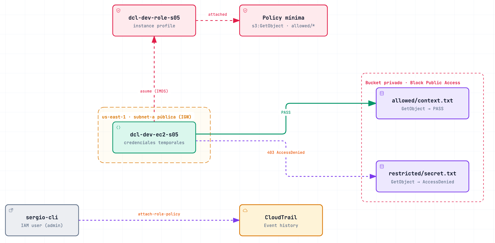

Lab 05 · Seguridad y gobernanza: reachability no es authorization
Digital Café Luna · us-east-1 · corrido por CLI el 3 oct 2026 · cleanup verificado el 14 oct (solo queda baseline S01)
La idea en una frase: misma EC2, mismo role, misma red. Solo cambian Action y Resource de la policy: un GetObject da PASS y dos operaciones fuera de alcance dan AccessDenied. Llegar a S3 (ruta, DNS, SG) no autoriza nada.

1. Las pruebas (misma identidad, distinto alcance)
| Prueba | Resultado | Qué demuestra |
|---|
sts get-caller-identity | assumed-role/dcl-dev-role-s05/i-… | Quién ejecuta: sesión del role, credenciales temporales vía IMDS, sin access keys. |
GetObject allowed/context.txt | PASS | Red, DNS y credenciales funcionan. |
GetObject restricted/secret.txt | AccessDenied | Falla por Resource: no coincide con allowed/*. |
PutObject en allowed/ | AccessDenied | Falla por Action: PutObject no está concedida. |
2. Cada control responde una pregunta
| Control | Pregunta |
|---|
| IAM Role + trust policy | ¿Quién es el workload? (ec2.amazonaws.com lo asume) |
| Policy de permisos | ¿Qué puede hacer y sobre qué? (Action + Resource) |
| SSE-S3 (AES256) | ¿El dato está protegido at rest? No decide quién lo lee. |
| Block Public Access | ¿Puede quedar público por error? No. |
| CloudTrail Event history | ¿Quién cambió permisos y cuándo? (AttachRolePolicy) |
3. Diagnóstico: leer el error antes de tocar permisos
- Timeout → red (ruta, SG, NACL). No es IAM.
- Unable to locate credentials → identidad: falta instance profile o IMDS.
- NoSuchKey → nombre del objeto. Por eso
restricted/ se crea antes.
- AccessDenied … no identity-based policy allows → autorización: revisar la policy del role.
- Evidencia de que es autorización y no red: el PASS desde la misma EC2, el mismo ARN de role y la policy visible limitada a
allowed/*.
- No se arregla con
s3:* ni AmazonS3FullAccess: rompe least privilege.
4. Detalles que suelen preguntar
- Credenciales temporales: el role entrega claves que rotan solas;
aws configure list muestra tipo iam-role.
- Instance profile: el contenedor que pone el role en la EC2. La consola lo crea solo; por CLI hay que crearlo.
- CloudTrail: GetObject y PutObject son data events y no salen en Event history.
AttachRolePolicy es management event y sí.
- Cifrado ≠ autorización: el objeto restringido estaba cifrado y el role igual recibió AccessDenied.
5. Preguntas tipo test
La EC2 lee allowed/ pero falla en restricted/ con AccessDenied. ¿Causa?
La policy del role no cubre ese Resource. No es la red: el PASS sale de la misma instancia.
¿Qué evidencia atribuye el cambio de permisos a una persona?
El evento AttachRolePolicy en CloudTrail: userIdentity, eventTime y requestParameters.
¿Activar SSE-S3 impide que el role lea restricted/?
No. El cifrado protege at rest; quien decide el acceso es la policy.